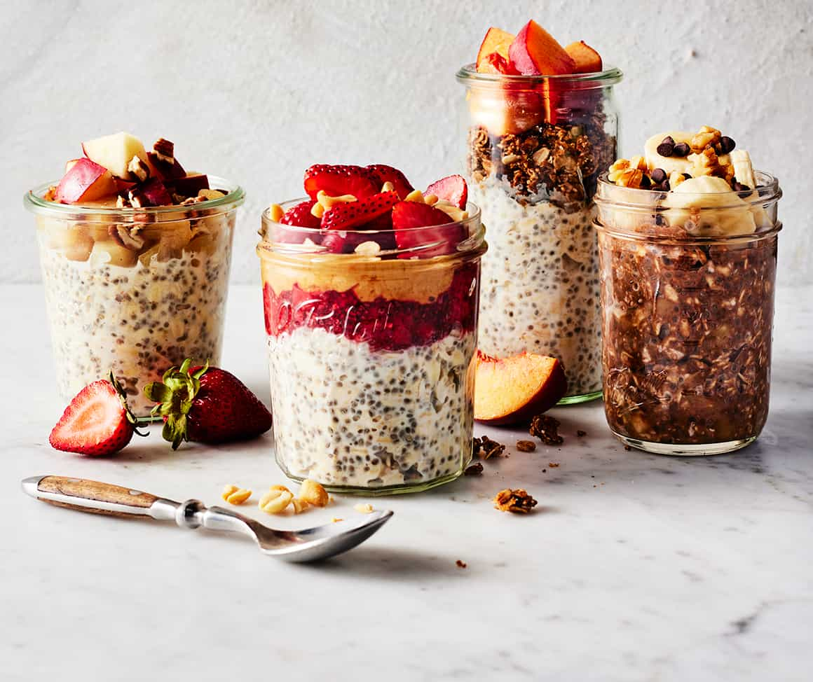

Overnight Oats

Description
I love this overnight oats recipe! It's easy to make-ahead for a quick, on-the-go breakfast. You can add-in your favorite toppings, fruit, or nuts.
Ingredients
- ⅓ cup milk
- ¼ cup Greek yogurt
- ¼ cup rolled oats
- 2 teaspoons honey
- 2 teaspoons chia seeds
- 1/4 teaspoon ground cinnamon or more to taste
- ¼ cup fresh blueberries
Steps
- Gather all ingredients.
- Combine milk, yogurt, oats, honey, chia seeds, and cinnamon in a 1/2-pint jar with a lid; cover and shake until combined.
- Fold in blueberries.
- Cover and refrigerate, 8 hours to overnight. Enjoy!